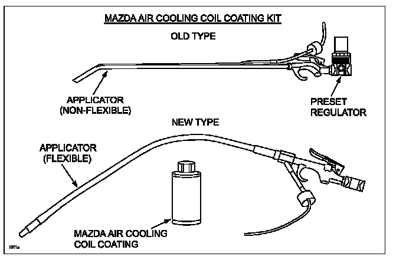

A/C - Musty/Mildew Odor Elimination: Overview
Bulletin No.: 07-006/08Last Issued: 10/15/2008
Subject:
AIR CONDITIONING MUSTY / MILDEW ODOR
BULLETIN NOTE
This bulletin supersedes 07-001/03 issued 05/02/2003 and 07-001/07 issued 06/08/2007. The APPLICABLE MODEL(S)/VINS and REPAIR PROCEDURE have been revised.
APPLICABLE MODEL(S)/VINS
2007-2009 CX-7
2006-2008 MX-5
2004-2009 Mazda3
2003-2008 Mazda6
2000-2003 MPV
1998-2002 626
1998-2003 Protege
2002-2003 Protege5
1998 MPV
1998-2002 Millenia
1999-2005 Miata
DESCRIPTION
A musty/mildew type odor may come from the vents when the air conditioning (A/C) system is operating. It is most noticeable when the A/C is first turned ON. This odor is the result of mold growth in the A/C evaporator/ cooling unit which is caused by condensation, dust, and pollen within the cooling unit. This condition is usually worse during high humidity conditions. "Mazda Air Cooling Coil Coating" is available to encapsulate the mold to reduce odors. If the product is properly applied, it can effectively reduce the musty/mildew odor for up to three years.

NOTE:
See parts information for Mazda Air Cooling Coil Coating and Kit part numbers.
This treatment provides a durable coating that will aid to prevent biological reactions that lead to odor concerns.
It is applied to the evaporator in a misted form that is introduced by way of the cabin air filter, the re-circulate door, the blower motor resistor access, or the blower motor air intake. Proper application requires the evaporator surface to be:
- Relatively clean and free of leaves, dust build-up and debris.
- Thoroughly dried, and the product cured onto it after application.
NOTE:
^ A/C odor is not unique to Mazda vehicles as it will occur in other makes and models.
^ To minimize A/C odor, suggest the following to the customers:
- Keep the cooling unit dry by leaving the blower fan ON (at least on low), even if the A/C is not being used.
- In low humidity (dry) conditions, keep the ventilation system in the "FRESH" mode all the time, or as much as possible.
- In high humidity conditions, or if the air has a lot of dust or pollen, keep the system in the "RECIRCULATION" mode.
- A few minutes before reaching a destination, turn the A/C OFF, but leave the blower fan ON.
This stops the accumulation of condensation on the evaporator/cooling unit, and it helps dry the inside of the cooling unit.
Customers having this concern should have their vehicle repaired using the Repair procedure.